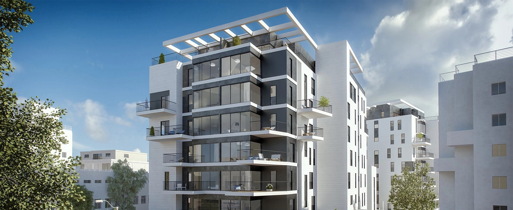

<section class="vedio-section">
    <div class="container">
        <div class="row g-3 flex-item-center">
            <div class="col-md-6">
                <h4 class="section-title">
                    <span class="title">{{siteInformation?.vedioTitle}}</span>
                </h4>
                <p class="my-4">
                    {{siteInformation?.vedioDescription}}
                </p>
            </div>
            <div class="col-md-6">
                <div class="video-cover" data-bs-toggle="modal" [attr.data-bs-target]="'#modal-video'">
                    
                    <a href="#" class="play-btn" title="تشغيل الفيديو">
                        <svg width="45" height="45" viewBox="0 0 45 45">
                            <path id="play"
                                d="M22.5,45A22.5,22.5,0,0,1,6.59,6.59,22.5,22.5,0,1,1,38.41,38.41,22.353,22.353,0,0,1,22.5,45Zm-5-29.5v14l13-7Z"
                                fill="#fff" />
                        </svg>
                    </a>
                </div>
                <!-- <div class="videoWrapper"> -->
                <!-- <div id="instructions">
        <video
          #videoPlayer
          id="my_video_1"
          class="video-js vjs-default-skin"
          muted="muted"
          width="100%"
          height="100%"
          preload="none"
          poster="http://video-js.zencoder.com/oceans-clip.jpg"
        >
          <source [src]="src" [type]="type" />
          <source [src]="src" type="video/webm" />
        </video>
      </div> -->

                <!-- <vg-player dir="ltr">
                        <vg-overlay-play></vg-overlay-play>
                        <vg-buffering></vg-buffering>

                        <vg-scrub-bar>
                            <vg-scrub-bar-current-time></vg-scrub-bar-current-time>
                            <vg-scrub-bar-buffering-time></vg-scrub-bar-buffering-time>
                        </vg-scrub-bar>

                        <vg-controls>
                            <vg-play-pause></vg-play-pause>
                            <vg-playback-button></vg-playback-button>

                            <vg-time-display vgProperty="current" vgFormat="mm:ss"></vg-time-display>

                            <vg-scrub-bar style="pointer-events: none;"></vg-scrub-bar>

                            <vg-time-display vgProperty="left" vgFormat="mm:ss"></vg-time-display>
                            <vg-time-display vgProperty="total" vgFormat="mm:ss"></vg-time-display>


                            <vg-mute></vg-mute>
                            <vg-volume></vg-volume>

                            <vg-fullscreen></vg-fullscreen>
                        </vg-controls>
                        <video [vgMedia]="$any(media)" #media id="singleVideo" preload="auto" crossorigin width="100%">
                            <source src="https://vjs.zencdn.net/v/oceans.mp4" type="video/mp4">
                        </video>
                    </vg-player> -->


                <!-- </div> -->

            </div>
        </div>
    </div>
</section>


<!-- Modal -->
<div class="video-modal">
    <div class="modal fade" [id]="'modal-video'" tabindex="-1" aria-labelledby="exampleModalLabel" aria-hidden="true">
        <div class="modal-dialog modal-lg">
            <div class="modal-content">
                <div class="modal-header">
                    <button type="button" class="btn-close" (click)="pause()" data-bs-dismiss="modal" aria-label="Close"></button>
                </div>
                <div class="modal-body">
                      <vg-player dir="ltr">
                        <vg-overlay-play></vg-overlay-play>
                        <vg-buffering></vg-buffering>

                        <vg-scrub-bar>
                            <vg-scrub-bar-current-time></vg-scrub-bar-current-time>
                            <vg-scrub-bar-buffering-time></vg-scrub-bar-buffering-time>
                        </vg-scrub-bar>

                        <vg-controls>
                            <vg-play-pause></vg-play-pause>
                            <vg-playback-button></vg-playback-button>

                            <vg-time-display vgProperty="current" vgFormat="mm:ss"></vg-time-display>

                            <vg-scrub-bar style="pointer-events: none;"></vg-scrub-bar>

                            <vg-time-display vgProperty="left" vgFormat="mm:ss"></vg-time-display>
                            <vg-time-display vgProperty="total" vgFormat="mm:ss"></vg-time-display>


                            <vg-mute></vg-mute>
                            <vg-volume></vg-volume>

                            <vg-fullscreen></vg-fullscreen>
                        </vg-controls>
                        <video [vgMedia]="$any(media)" #media id="singleVideo" preload="auto" crossorigin width="100%">
                            <source src="https://vjs.zencdn.net/v/oceans.mp4" type="video/mp4">
                        </video>
                    </vg-player>


                </div>
            </div>
        </div>
    </div>
</div>


